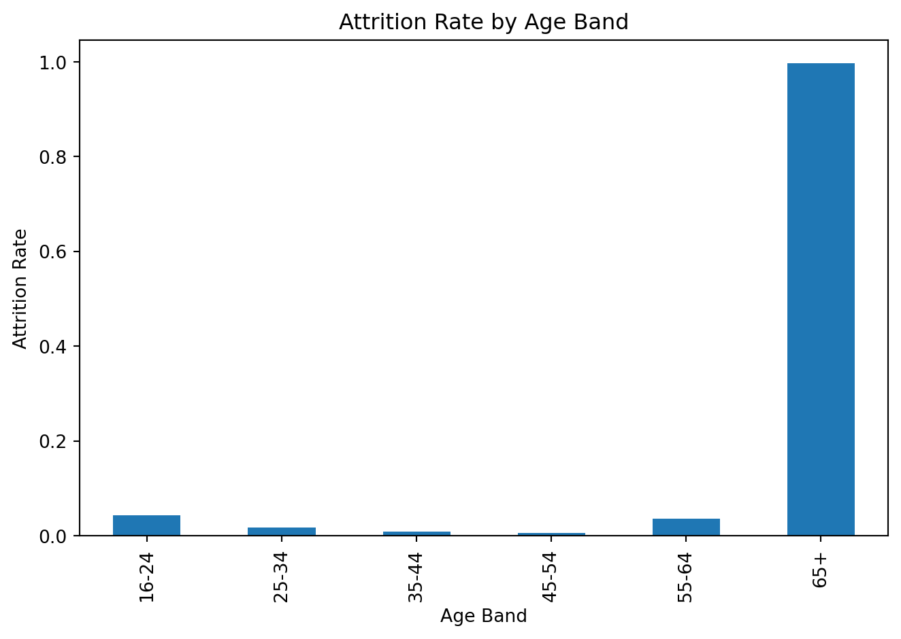

Getting Started
import pandas as pd
from matplotlib import pyplot as plt
attrit_df = pd.read_csv("MFG10YearTerminationData.csv")In this tutorial you will learn how to locate a practice employee data set, load it, clean it, analyze it, and visualize it. Employee attrition is an important metric in the HR workd that represents how often people are leaving the company for any reason. The process outlined below will guide us on our search for deeper attrition insights.
Collecting data is an important first step in using data science principles to analyze a business problem. Large data quantity and high data quality are great goals to strive for when collecting data to produce the best results after analysis. For the purposes of this tutorial I will be selecting a dataset from Kaggle.com, a popular platform in the data science community, to show my analysis process end-to-end.
The dataset I chose contains fictitious data on terminations over ten years, showing both employees that are active and those that terminated. There are 18 columns or attributes we can work with including: employee age, employee tenure, employee number, employee status, departure reason, etc. I downloaded it into my project folder as MFG10YearTerminationData.csv and opened it within VS Code (my preferred IDE, although any will work).
Let’s import pandas as pd and from matplotlib import pyplot as plt in our main file to get started, and use pd.read_csv() read our CSV into a DataFrame by running the code below.
Check to make sure your data was read in correctly by using some quick summarization commands like .head(), .describe(), or .info() to get a general view of your data and perform some preliminary validation before analysis. These commands will return the first X rows of data, give general statistics about the “age” column, and give a concise description of the data frame respectively. I chose .describe() to check if the numbers seemed off or not at first glance.
count 49653.000000
mean 42.077035
std 12.427257
min 19.000000
25% 31.000000
50% 42.000000
75% 53.000000
max 65.000000
Name: age, dtype: float64Now that we have checked that our data is collected and properly loaded, we can move into preparing it.
Getting the data ready to be analyzed is almost as important as the analysis itself! Working with incorrect or incomplete data can render any insights practically useless, so it’s important to take time to ensure your data is ready to be manipulated before jumping in. While every data set is different, it is always good to identify attributes/column of interest, clarify column names, drop duplicate rows, and identify missing/incorrect data. Below are several examples of how to evaluate the quality of your data.
Using commands like .strip, .lower, and .replace can help us create more uniform column names. pd.to_datetime converts the dates to the correct data type to ensure they work properly. The last line creates a new column returning True or False if the employee has been terminated, and converts those booleans into a binary column using .astype(int) that will help us calculate attrition later.
attrit_df.columns = [c.strip().lower().replace(" ", "_") for c in attrit_df.columns]
attrit_df["terminationdate_key"] = pd.to_datetime(attrit_df.get("terminationdate_key"), errors="coerce")
attrit_df["orighiredate_key"] = pd.to_datetime(attrit_df.get("orighiredate_key"), errors="coerce")
attrit_df = attrit_df.drop_duplicates()
attrit_df["status"] = attrit_df["status"].str.strip().str.title()
attrit_df["is_terminated"] = (attrit_df["status"] == "Terminated").astype(int)Now that we are confident our data is loaded correclty, our columns are uniform, and we dropped ny duplicates, we can get into analyzing the data!
When analyzing data, it is important to start with questions that you would like to answer. Perhaps you already have some suspicion that a particular department is driving attrition ir a certain age group. These are perfect places to start, but don’t stop there! Consider alternative options and seek to prove/disprove your hypotheses with data.
We can do a simple overall attrition calculation by counting all of the rows of data containing terminated employees and dividing that by the total number of rows in our data set. Using .mean() will quickly do this. I then printed the number and converted it into a percentage.
Again we can use .mean() to calculate the attrition percent, but this time we will group the percentages by department using .groupby().
department_name
Information Technology 0.250000
Legal 0.176471
Labor Relations 0.176471
Training 0.166667
Audit 0.166667
Compensation 0.166667
Investment 0.166667
HR Technology 0.140625
Employee Records 0.136364
Accounts Receiveable 0.128205
Name: is_terminated, dtype: float64Here we are looking at Tenure and Attrition to see if we can find any insights there. We created bins and labels and then used them with the .cut() function to look at tenure (a continuous variable) as if it were discrete.
tenure_band
<1 0.015800
1-3 0.037508
3-5 0.010812
5-10 0.031268
10-20 0.029859
20+ 0.044800
Name: is_terminated, dtype: float64Again, we are using the .cut() to look into another angle. This time is age and attrition.
age_band
16-24 0.043321
25-34 0.016727
35-44 0.008408
45-54 0.005588
55-64 0.036559
65+ 0.996627
Name: is_terminated, dtype: float64Now that we understand how to calculate attrition from a few different angles, now we can move into visualizing our findings in bar plots with pyplot from matplotlib. Since we imported pyplot as plt, we can use it with other commands like .figure(), .plot(), .title, and .show() to create data visualizations.
Sometimes visualizing data this way can make it easier to spot trends in the data rather than just reading it. All of the visualizations below use the data above to look at attrition from various angles like department, tenure, and age. Open the code chucnks to see what code is run to output the visualization.

Data driven insights are only as compellingas the story they tell. Communicating technical insights to non-techincal audiences is a skill developed overtime. Try to ask yourself, “What do these numbers mean for the company?” or “What actions should be taken as a result of these findings?”. Analyzing the data is important, but communicating what it means is perhaps even more important.
Attrition is 3% overall. It’s highest in the IT department by far
Rates peak in the 1–3 and 20+ tenure bands, suggesting early and late stage retention as a problem
Age bands 65+ show elevated rates, which may reflect retirement departures or possible age discrimination if the attrition is involuntary
As you can see, following these simple data science steps to load, prepare, and analyze data revealed trends that would be impossible to see when looking at the raw data. Even further, the bar chart visualizations we created made the hotspots in the data even easier to spot and supported our initial findings. Great job!
Visit this site and find an employee dataset that interests you! Follow the steps above to calculate and visualize attrition. Have fun! :)
---
title: "Analyzing Employee Attrition Data: A Step-by-Step Python Guide with Pandas and Matplotlib"
format: html
jupyter: final_kernel
---
# Introduction
*In this tutorial you will learn how to locate a practice employee data set, load it, clean it, analyze it, and visualize it. Employee attrition is an important metric in the HR workd that represents how often people are leaving the company for any reason. The process outlined below will guide us on our search for deeper attrition insights.*
---
# Step 1. Collecting and Loading Data
Collecting data is an important first step in using data science principles to analyze a business problem. Large data quantity and high data quality are great goals to strive for when collecting data to produce the best results after analysis. For the purposes of this tutorial I will be selecting a dataset from [Kaggle.com](https://www.kaggle.com/), a popular platform in the data science community, to show my analysis process end-to-end.
The [dataset](https://www.kaggle.com/datasets/HRAnalyticRepository/employee-attrition-data) I chose contains fictitious data on terminations over ten years, showing both employees that are active and those that terminated. There are 18 columns or attributes we can work with including: employee age, employee tenure, employee number, employee status, departure reason, etc. I downloaded it into my project folder as `MFG10YearTerminationData.csv` and opened it within VS Code (my preferred IDE, although any will work).
Let’s `import pandas` as `pd` and `from matplotlib import pyplot` as `plt` in our main file to get started, and use `pd.read_csv()` read our CSV into a DataFrame by running the code below.
```{python}
#| code-fold: true
#| code-fold-show: false
#| code-summary: Getting Started
import pandas as pd
from matplotlib import pyplot as plt
attrit_df = pd.read_csv("MFG10YearTerminationData.csv")
```
Check to make sure your data was read in correctly by using some quick summarization commands like `.head()`, `.describe()`, or `.info()` to get a general view of your data and perform some preliminary validation before analysis. These commands will return the first X rows of data, give general statistics about the "age" column, and give a concise description of the data frame respectively. I chose `.describe()` to check if the numbers seemed off or not at first glance.
```{python}
#| code-fold: true
#| code-fold-show: false
#| code-summary: Quick Spot Check
attrit_df["age"].describe()
```
Now that we have checked that our data is collected and properly loaded, we can move into preparing it.
---
# Step 2. Preparing Data
Getting the data ready to be analyzed is almost as important as the analysis itself! Working with incorrect or incomplete data can render any insights practically useless, so it's important to take time to ensure your data is ready to be manipulated before jumping in. While every data set is different, it is always good to identify attributes/column of interest, clarify column names, drop duplicate rows, and identify missing/incorrect data. Below are several examples of how to evaluate the quality of your data.
Using commands like `.strip`, `.lower`, and `.replace` can help us create more uniform column names. `pd.to_datetime` converts the dates to the correct data type to ensure they work properly. The last line creates a new column returning `True` or `False` if the employee has been terminated, and converts those booleans into a binary column using `.astype(int)` that will help us calculate attrition later.
```{python}
#| code-fold: true
#| code-fold-show: false
#| code-summary: Data Preparation
attrit_df.columns = [c.strip().lower().replace(" ", "_") for c in attrit_df.columns]
attrit_df["terminationdate_key"] = pd.to_datetime(attrit_df.get("terminationdate_key"), errors="coerce")
attrit_df["orighiredate_key"] = pd.to_datetime(attrit_df.get("orighiredate_key"), errors="coerce")
attrit_df = attrit_df.drop_duplicates()
attrit_df["status"] = attrit_df["status"].str.strip().str.title()
attrit_df["is_terminated"] = (attrit_df["status"] == "Terminated").astype(int)
```
Now that we are confident our data is loaded correclty, our columns are uniform, and we dropped ny duplicates, we can get into analyzing the data!
---
# Step 3. Analyzing Data
When analyzing data, it is important to start with questions that you would like to answer. Perhaps you already have some suspicion that a particular department is driving attrition ir a certain age group. These are perfect places to start, but don't stop there! Consider alternative options and seek to prove/disprove your hypotheses with data.
### 3.1 What is the overall attrition rate?
We can do a simple overall attrition calculation by counting all of the rows of data containing terminated employees and dividing that by the total number of rows in our data set. Using `.mean()` will quickly do this. I then printed the number and converted it into a percentage.
```{python}
#| code-fold: true
#| code-fold-show: false
#| code-summary: Calculate Overall Attrition
overall_rate = attrit_df["is_terminated"].mean()
print(f"The overall attrition rate is {round(overall_rate, 4)} or {round(overall_rate*100, 2)}%. That's nearly 3%!")
```
### 3.2 Do other apartments attrit more than others?
Again we can use `.mean()` to calculate the attrition percent, but this time we will group the percentages by department using `.groupby()`.
```{python}
#| code-fold: true
#| code-fold-show: false
#| code-summary: Calculate Attrition by Department
dept_rate = attrit_df.groupby("department_name")["is_terminated"].mean().sort_values(ascending=False)
dept_rate.head(10)
```
### 3.3 Does tenure relate to attrition?
Here we are looking at Tenure and Attrition to see if we can find any insights there. We created bins and labels and then used them with the `.cut()` function to look at tenure (a continuous variable) as if it were discrete.
```{python}
#| code-fold: true
#| code-fold-show: false
#| code-summary: Calculate Attrition by Tenure
#| warning: false
#| message: false
bins = [0,1,3,5,10,20,60]
labels = ["<1","1-3","3-5","5-10","10-20","20+"]
attrit_df["tenure_band"] = pd.cut(attrit_df["length_of_service"], bins=bins, labels=labels, right=False)
tenure_rate = attrit_df.groupby("tenure_band")["is_terminated"].mean()
tenure_rate
```
### 3.4 How old are those who attrit?
Again, we are using the `.cut()` to look into another angle. This time is age and attrition.
```{python}
#| code-fold: true
#| code-fold-show: false
#| code-summary: Calculate Attrition by Age
#| warning: false
#| message: false
age_bins = [16,25,35,45,55,65,100]
age_labels = ["16-24","25-34","35-44","45-54","55-64","65+"]
attrit_df["age_band"] = pd.cut(attrit_df["age"], bins=age_bins, labels=age_labels, right=False)
age_rate = attrit_df.groupby("age_band")["is_terminated"].mean()
age_rate
```
---
# Step 4. Visualizing Data
Now that we understand how to calculate attrition from a few different angles, now we can move into visualizing our findings in bar plots with `pyplot` from `matplotlib`. Since we imported `pyplot` as `plt`, we can use it with other commands like `.figure()`, `.plot()`, `.title`, and `.show()` to create data visualizations.
Sometimes visualizing data this way can make it easier to spot trends in the data rather than just reading it. All of the visualizations below use the data above to look at attrition from various angles like department, tenure, and age. Open the code chucnks to see what code is run to output the visualization.
### 4.1 Attrition by department (bar)
```{python}
#| code-fold: true
#| code-fold-show: false
#| code-summary: Attrition by Dept Bar Chart
#| fig-alt: "Bar chart showing attrition rates by department. Information Technology shows much higher attrition than other departments."
plt.figure()
dept_rate.plot(kind="bar")
plt.title("Attrition Rate by Department")
plt.ylabel("Attrition Rate")
plt.xlabel("Department")
plt.tight_layout()
plt.show()
```
### 4.2 Attrition by tenure band (bar)
```{python}
#| code-fold: true
#| code-fold-show: false
#| code-summary: Attrition by Tenure Bar Chart
#| fig-alt: "Bar chart showing attrition rates by Tenure Bands in years. Bins 1-3 and 20+ show higher attrition rates than other bins."
plt.figure()
tenure_rate.plot(kind="bar")
plt.title("Attrition Rate by Tenure Band")
plt.ylabel("Attrition Rate")
plt.xlabel("Tenure Band (years)")
plt.tight_layout()
plt.show()
```
### 4.3 Attrition by age band (bar)
```{python}
#| code-fold: true
#| code-fold-show: false
#| code-summary: Attrition by Age Bar Chart
#| fig-alt: "Bar chart showing attrition rates by Age. Ages 65+ show significantly higher attrition rates than other ages."
plt.figure()
age_rate.plot(kind="bar")
plt.title("Attrition Rate by Age Band")
plt.ylabel("Attrition Rate")
plt.xlabel("Age Band")
plt.tight_layout()
plt.show()
```
---
# Step 5. Storytelling With Data
Data driven insights are only as compellingas the story they tell. Communicating technical insights to non-techincal audiences is a skill developed overtime. Try to ask yourself, "What do these numbers mean for the company?" or "What actions should be taken as a result of these findings?". Analyzing the data is important, but communicating what it means is perhaps even more important.
### What we found:
- Attrition is 3% overall. It’s highest in the IT department by far
- Rates peak in the 1–3 and 20+ tenure bands, suggesting early and late stage retention as a problem
- Age bands 65+ show elevated rates, which may reflect retirement departures or possible age discrimination if the attrition is involuntary
As you can see, following these simple data science steps to load, prepare, and analyze data revealed trends that would be impossible to see when looking at the raw data. Even further, the bar chart visualizations we created made the hotspots in the data even easier to spot and supported our initial findings. **Great job!**
---
# Call to Action:
Visit this [site](https://www.kaggle.com/) and find an employee dataset that interests you! Follow the steps above to calculate and visualize attrition. Have fun! `:)`